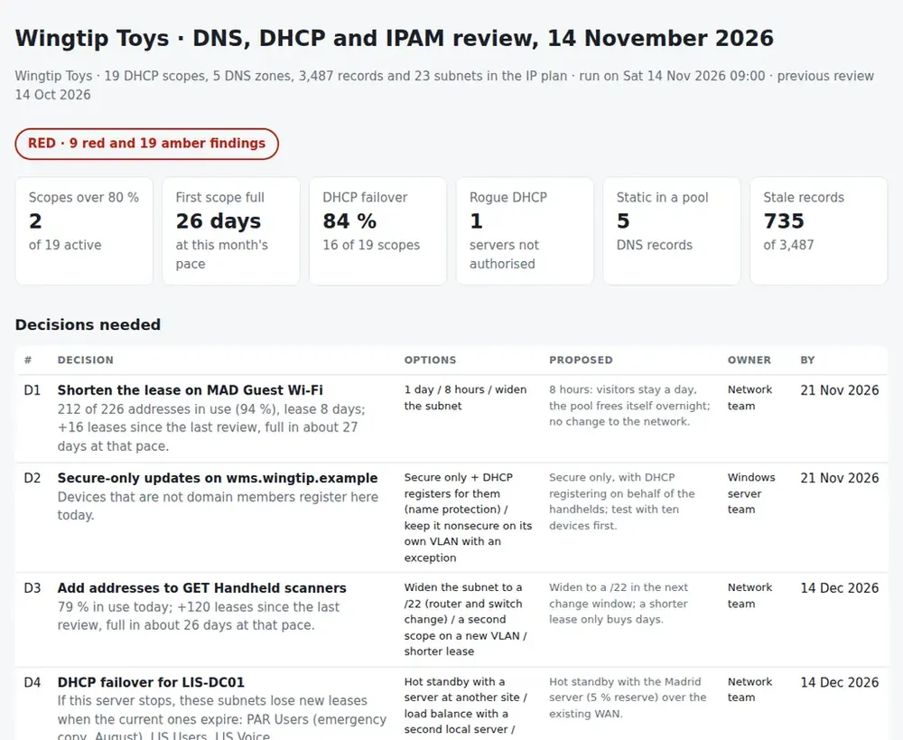

La wifi de invitados de una cadena de tiendas está al 94 % de sus direcciones porque sigue con la concesión por defecto de ocho días, así que a mitad de un mes con mucho movimiento las visitas no pueden conectarse. Así lo detecta la revisión de DNS, DHCP e IPAM que acompaña a este post, un proyecto de código abierto que se ejecuta con datos de ejemplo de una juguetera inventada con una sede central, un centro de distribución y dos oficinas, 19 ámbitos y 3.487 registros, revisada el 14 de noviembre con los problemas puestos a propósito.
Una concesión es el tiempo que un equipo conserva la dirección que le da DHCP, y un ámbito es el conjunto de direcciones de una subred. En una red de invitados, la dirección de cada visita sigue ocupada ocho días después de que se vaya. La revisión compara la duración de las concesiones con el estándar para las subredes de invitados, wifi y usuarios, y deja la elección entre una concesión más corta y una subred más amplia como decisión para la revisión de infraestructura.
Los lectores de mano llenarán su ámbito en unos 26 días
La herramienta ordena los ámbitos por ritmo y no por porcentaje. El crecimiento desde la última revisión da los días que faltan para que cada pool se llene, así que un ámbito al 79 % que ha crecido 120 equipos en un mes sale antes que uno al 81 % que apenas se mueve. En la demo llegó un lote de lectores de mano nuevos para la campaña, y su ámbito se llenará en unos 26 días, antes de Navidad.
En conjunto la demo está en rojo, con una relación de conmutación rota, un router no autorizado, 735 registros obsoletos y cinco decisiones. El enlace con una sede cayó tras un cambio en el firewall y los dos servidores DHCP que comparten los ámbitos en conmutación dejaron de replicar las concesiones. Alguien conectó un router doméstico en la exposición para un evento de lanzamiento, y la revisión lo marca como un servidor DHCP no autorizado.
Un controlador de dominio retirado en septiembre sigue en cinco ámbitos
Se retiró un controlador de dominio, pero cinco ámbitos lo siguen dando como servidor DNS y seis registros apuntan todavía a él, entre ellos sus registros SRV. Además era el único servidor que hacía la limpieza, la tarea que borra los registros obsoletos. La herramienta compara la opción 006, los servidores DNS que entrega cada ámbito, con los servidores que siguen en marcha, y busca el servidor retirado en los registros A, NS, SRV y PTR.
Las comprobaciones de DNS encuentran también una zona que un proveedor dejó aceptando actualizaciones no seguras, lo que permite a cualquier equipo sobrescribir un nombre, e impresoras a las que un técnico dio una dirección fija en mitad de un pool. Un registro estático solo se marca cuando su dirección está dentro de un pool activo y no es una reserva. Un ámbito creado durante una caída sigue activo en otro servidor, y el plan de direccionamiento IP dice una cosa mientras los ámbitos dicen otra.
Cómo usarlo con datos reales
La exportación solo lee, con los cmdlets estándar de PowerShell DhcpServer y DnsServer: ámbitos, opciones, reservas y concesiones por servidor, y zonas y registros. Un ámbito en conmutación se exporta una sola vez, para no contar dos veces sus estadísticas. El plan IP se compara con ambos para encontrar ámbitos que no están en el plan, subredes planificadas sin ámbito, subredes que se solapan y subredes sin responsable o sin zona de búsqueda inversa.
Cada hallazgo tiene una gravedad, un responsable y una fecha, y las excepciones válidas quitan el punto mientras que las caducadas o incompletas no. El análisis funciona con Python y solo la librería estándar, y genera report.html, con cada ámbito, su crecimiento y los días que le quedan; review-pack.md, una página con las decisiones y las evidencias para las auditorías de ISO 27001 y NIS2; y ficheros CSV por ámbito, reserva, zona, registro obsoleto, subred, excepción, hallazgo y acción. Incluye 13 tests y un runbook para cambiar concesiones, ámbitos, actualizaciones seguras y limpieza sin sorpresas, y está pensado para ejecutarse el primer día laborable de cada mes y antes y después de cada cambio de red en una sede.
De dónde sale
La hice a partir de administrar DNS, DHCP y Active Directory en Windows Server desde el principio de mi carrera, y de llevar switches y routers Cisco, firewalls FortiGate y redes con varias sedes. Detrás hay dos lecciones: el porcentaje de un ámbito importa menos que su ritmo, porque el que se llena es el que crece; y retirar un controlador de dominio no termina hasta que DHCP y DNS dejan de apuntar a él.
¿Quieres llevarlo a tu entorno o adaptarlo a tu caso? Escríbeme y lo vemos.
Tech Career Lab · newsletter
¿Te ha servido? Cada dos semanas envío una idea práctica para perfiles IT: LinkedIn, proyectos, networking y procesos de selección.
Apúntate y llévate las 33 ideas →